This set explores mirror girl mirror dance through cinematic aesthetics and warm tone under golden-hour glow. Compositions use leading lines with minimal set, keeping focus clear and tidy. Details like sporty styling and balanced colors make browsing easy.
Browse mirror images. Page 4 of curated mirror-style portrait collection.
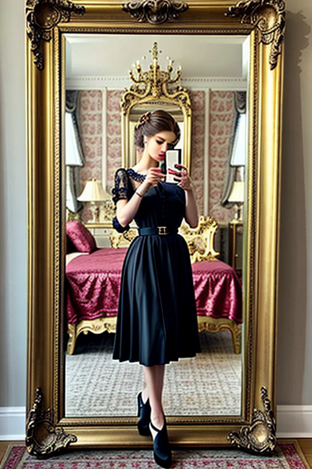 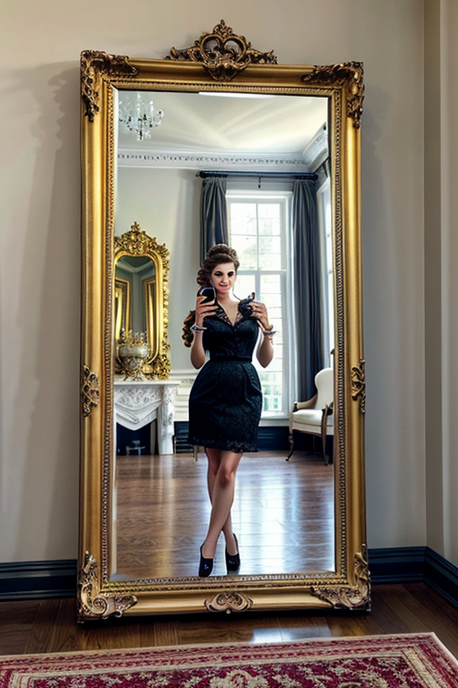 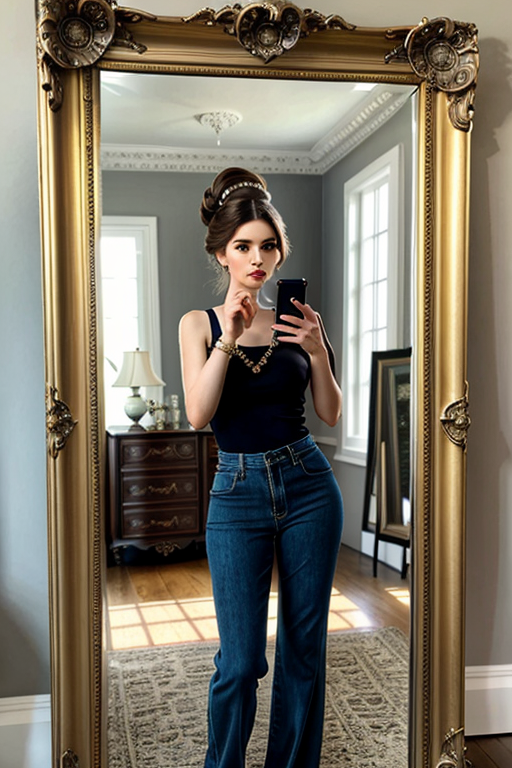 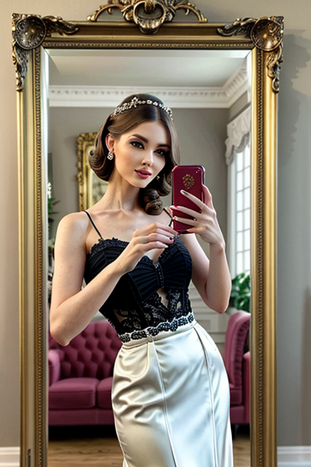 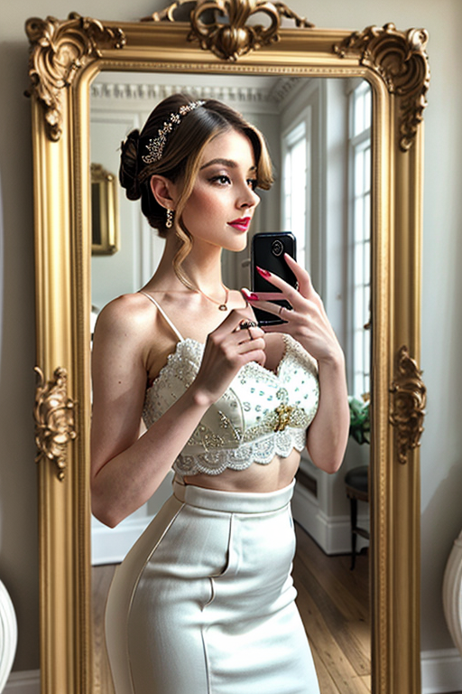 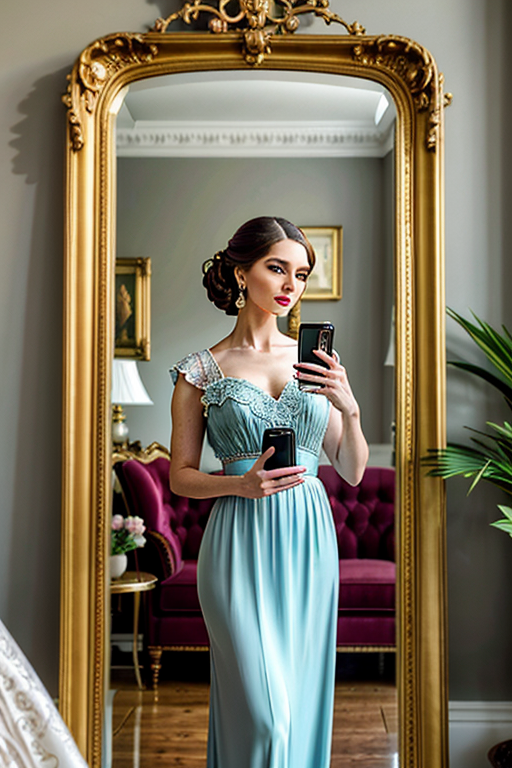 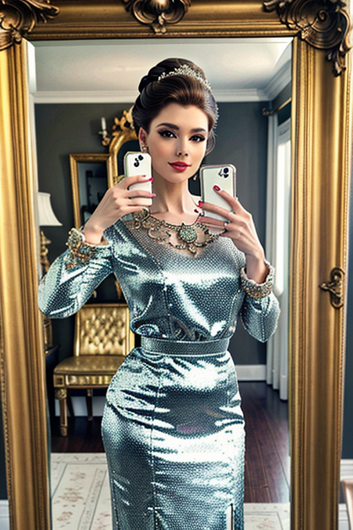 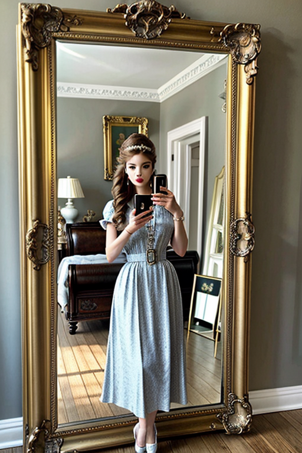 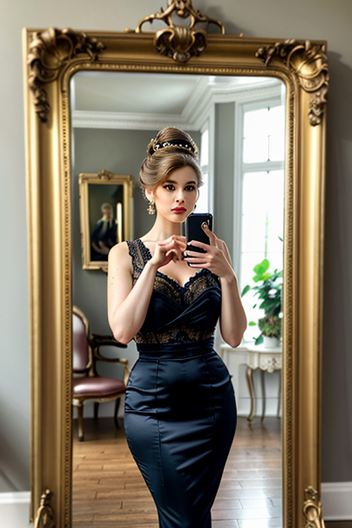 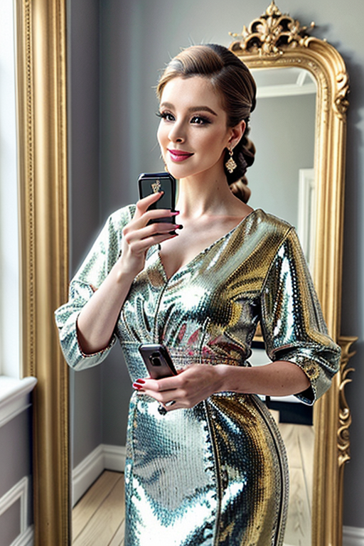 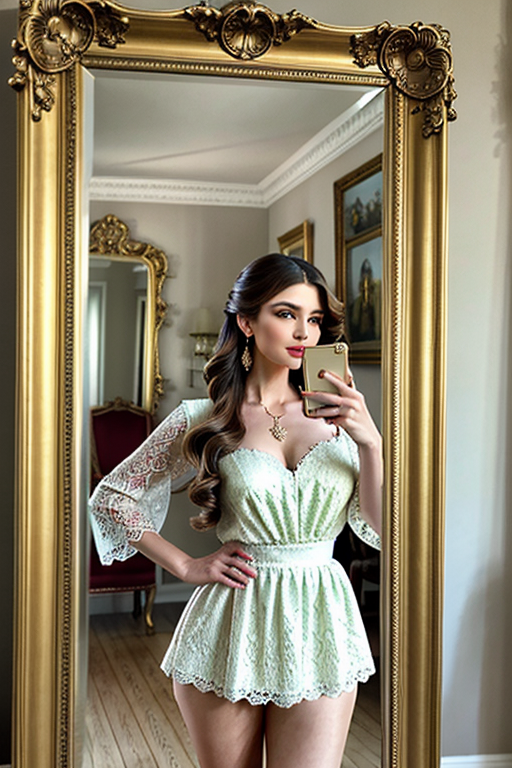 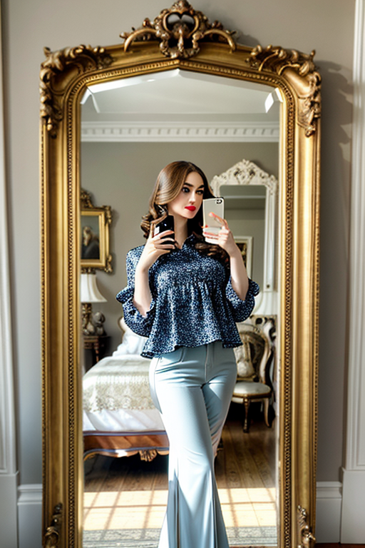 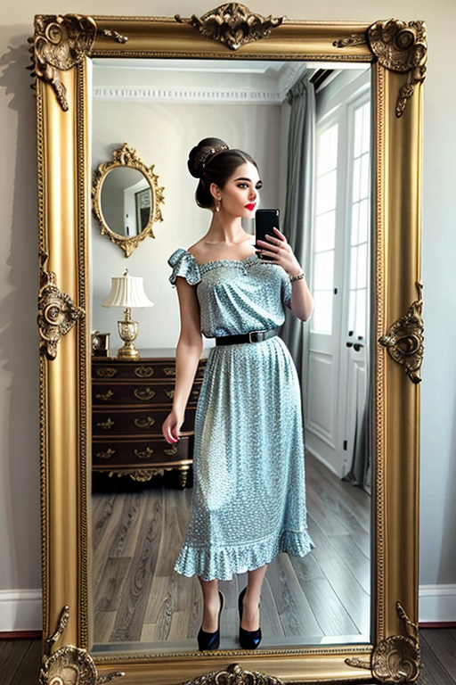 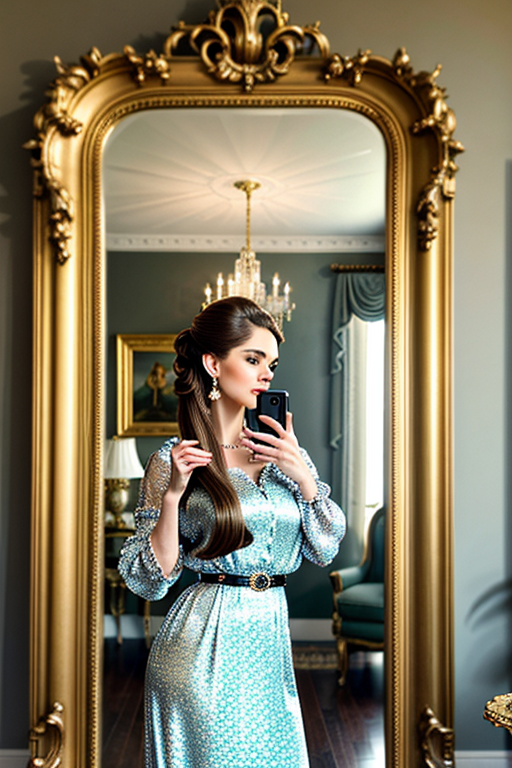 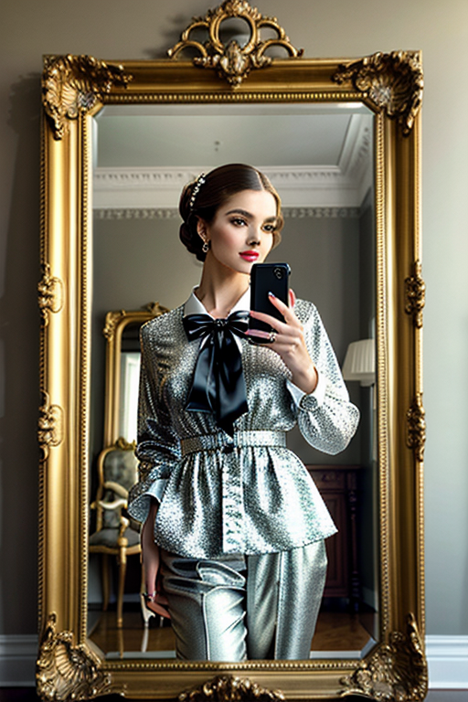 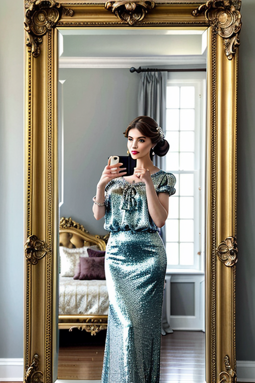 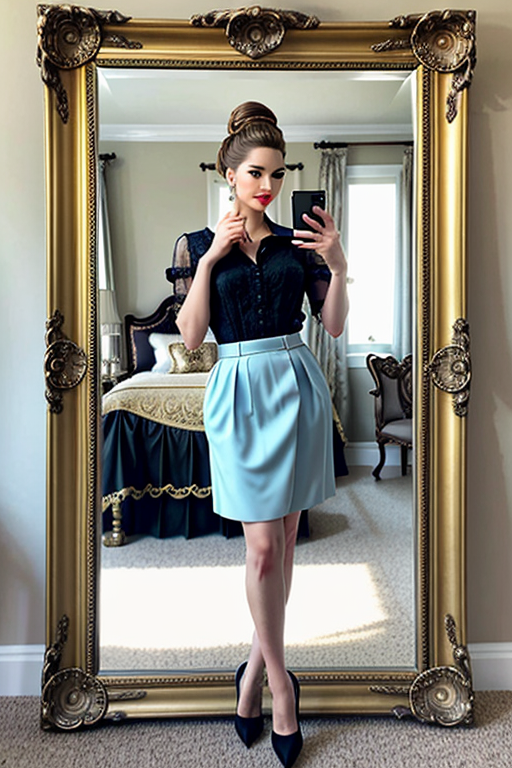 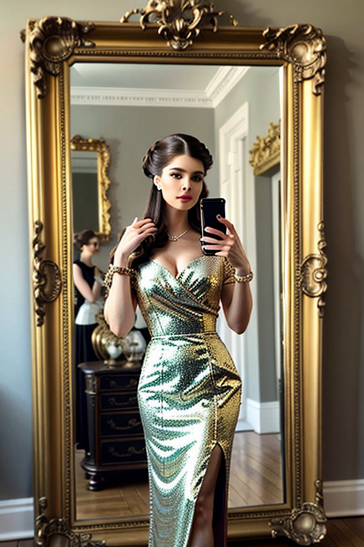This page explores page4 with a practical focus on visual detail and browsing experience. Alt text and headings are optimized to make the content accessible and to provide consistent cues across the site. Subtle differences in wording help avoid duplication across similar pages. Internal navigation leads to related items with comparable tone or composition. This reduces bounce and supports exploration within the same theme. The image aims to deliver a straightforward visual impression while keeping the file lightweight. A brief explanation clarifies the subject and lighting so visitors can quickly decide where to go next. The image aims to deliver a straightforward visual impression while keeping the file lightweight. A brief explanation clarifies the subject and lighting so visitors can quickly decide where to go next. For more context, browse related entries linked nearby; each page offers a slightly different angle to limit overlap.